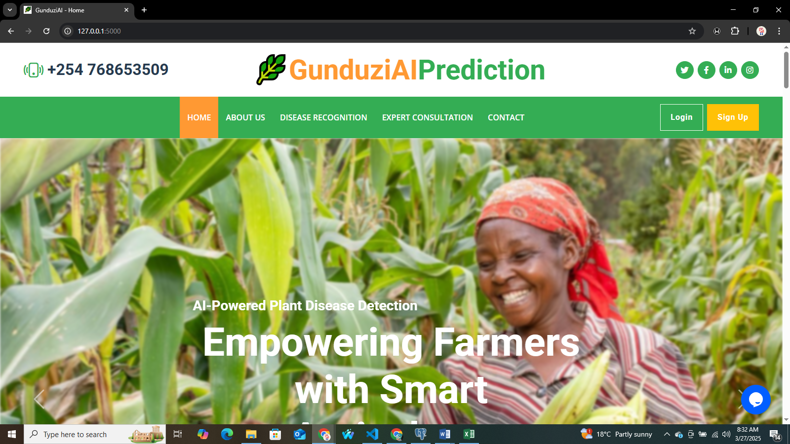

Technology is only useful when it solves something.
Our work spans intelligent systems, data platforms, custom software, automation, digital products, and cloud infrastructure. Each project begins with a problem and ends with a system designed around the people, processes, and decisions that matter.

GunduziAI
An AI-powered plant disease detection system designed to help identify crop diseases from plant images and support agricultural decision-making.
Selected projects and technical explorations.
Projects below are clearly labelled by their current status. Live demos and repositories will appear once verified URLs are available.
No projects in this category yet.
We are continuously expanding the work we document here.
Talk to NIAThe strongest technology stories are not about features.
They are about the problems those features help solve. Detailed case studies will be published here as projects progress through discovery, build, and deployment.
GunduziAI — Plant Disease Detection
THE PROBLEM
Crop diseases are difficult to identify early, especially where access to expert diagnosis is limited.
THE APPROACH
Use computer vision and machine learning to classify plant images and surface likely diseases.
THE SYSTEM
A Python-based model with a web interface for image upload and result display.
THE TECHNOLOGY
THE INTENDED VALUE
Faster, more accessible preliminary disease detection to support agricultural decisions.
NIA Data Intelligence Platform
THE PROBLEM
Operational datasets are often fragmented, making it hard to see what is happening across an organisation.
THE APPROACH
Design a decision-support environment that transforms raw data into interactive views.
THE SYSTEM
A structured data pipeline feeding dashboards and analytical views.
THE TECHNOLOGY
THE INTENDED VALUE
Clearer operational visibility and more consistent decision-making.
Tools chosen for the problem, not the trend.
These are the technology areas NIA works across. Specific tools are selected based on the project, the team, and the operating environment.
AI & ML
Data
Software
Infrastructure
We believe results should be measurable, attributable, and grounded in evidence.
As NIA projects move from delivery into documented outcomes, this section will capture verified improvements, operational gains, and meaningful impact.
Evidence will be added as projects are completed and verified.
We do not publish metrics until they can be measured, attributed, and explained.
Time Saved
Pending verified measurement
Processing Speed
Pending verified measurement
Accuracy
Pending verified measurement
Adoption
Pending verified measurement
We start with the problem, not the technology.
The right solution is rarely the one with the most technology. It is the one that fits the problem, the people, the data, and the environment in which it must operate.
Understand
Frame
Design
Build
Validate
Scale
Platforms we are building next.
Project Dashboard
A structured environment for managing and exploring NIA projects, milestones, technologies, documentation, and delivery progress.
Client Portal
A secure space for clients to follow project progress, exchange documents, review deliverables, and communicate with the NIA team.
Have a problem worth solving?
Tell us what you are trying to improve, automate, understand, or build. We will help you explore what technology can realistically do.
Start a Project Explore Services